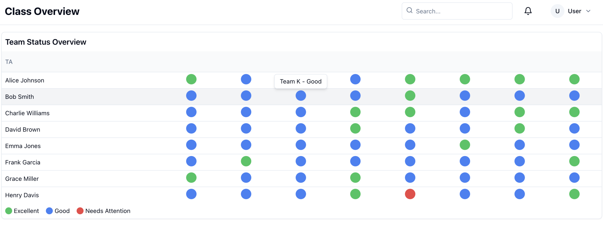
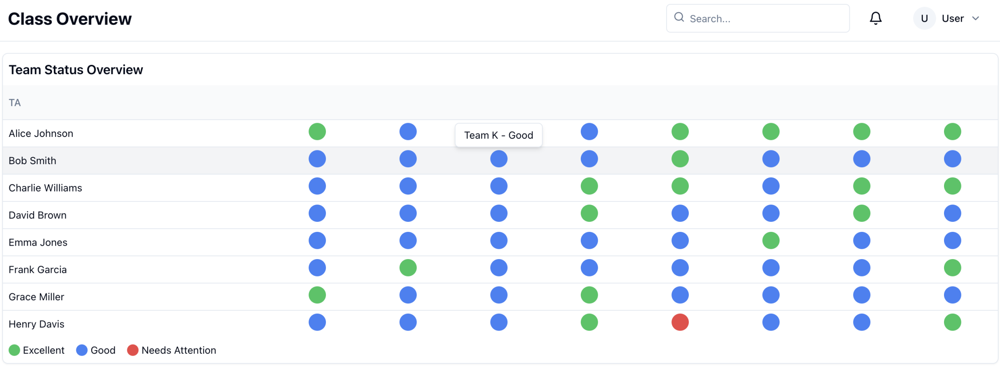

Senior Design Project - Fall 2024 to Spring 2025
Two-Semester Capstone Project for Seniors
The Senior Design Project is an intensive, year-long capstone focused on delivering an industry-level solution developed from a project proposed by either university faculty or an industry partner. Our team is tasked with building a comprehensive course management website for Dr. Simanta Mitra at Iowa State University, tailored to meet the specific needs of his ComS 309 course on Software Development Practices. This project will be evaluated at the end of the first semester by a faculty panel and by an industry panel in the spring. Further project resources and documentation can be found on our Senior Design Project website.
Project Overview
The ComS 309 course centers on semester-long team projects, traditionally focused on creating Android applications with Java and SpringBoot. In contrast, our Senior Design Project seeks to unify multiple course resources into a single web-based Dashboard. Our goal is to integrate various platforms, including Canvas, CATME, Google Forms, and GitLab, allowing Dr. Mitra and his teaching assistants to manage these resources in one location.
Project Contributions and Design Focus
As the Backend Lead, I focus on database design and the development of backend features to support frontend functionality and align with Dr. Mitra’s requirements. Key aspects of the backend include scalability to accommodate hundreds of concurrent users and a CSV analysis module to parse multiple data formats seamlessly. Security is our highest priority; since the platform will handle sensitive student information, we adhere strictly to FERPA standards for confidentiality. For our second semester, we anticipate using AWS infrastructure, including AWS RDS, to deploy the production server and ensure high availability.
Skills and Knowledge Gained
This project is providing me hands-on experience in scalable backend development, secure database management, and integration of multiple APIs within a unified platform. Additionally, working with AWS and AWS RDS will deepen my understanding of cloud deployment practices and provide insights into ensuring data security at scale in compliance with regulatory standards.
 ER Diagram

Dashboard Mockup
ER Diagram

Dashboard Mockup